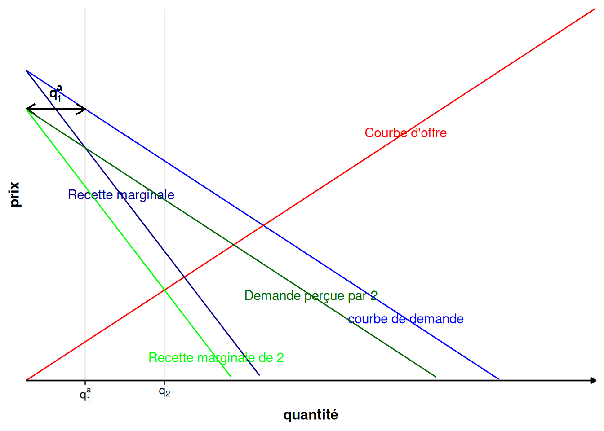
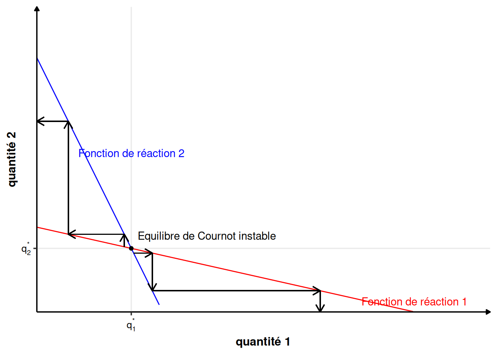

3 Oligopoles
Nous avons étudié jusqu’à présent deux cas extrêmes :
- La concurrence pure et parfaite : il y a une infinité d’entreprises infinitésimales sur un marché donné ;
- Le monopole : il y a une seule entreprise sur un marché donné.
Dans les deux cas, le ou les entreprises n’ont pas à se préoccuper des autres entreprises. Dans le cas du monopole, parce qu’il n’y en a pas. Dans le cas de la CPP, l’entreprise observe le prix du marché et prend sa décision en fonction de ce prix et uniquement de ce prix. Les actions des autres entreprises ne l’influencent pas.
On considère maintenant la situation où il n’y a plus une seule ou une infinité d’entreprises, mais plusieurs, qui sont en situation d’interactions stratégiques. Les décisions de chaque acteur dépend des décisions des autres acteurs (ou des anticipations de ces décisions).
On parle de duopole dans le cas où le marché compte deux entreprises et d’oligopole dans le cas où il compte plus que deux entreprises.
Les entreprises peuvent se faire concurrence de différentes manières :
- En quantité, concurrence dite à la Cournot ;
- En prix, concurrence à la Bertrand ;
- En prenant une situation de pilote ou de satellite, à la Stackelberg ;
- En format une entente, dans un cartel ;
- Dans une concurrence spatiale, à la Hotelling.
Nous verrons dans ce cours les concurrences à la Cournot et à la Stackelberg, ainsi que les cartels.
3.1 Duopole à la Cournot
3.1.1 Introduction
On considère deux entreprises sur le même marché qui doivent choisir les quantités à produire, sans connaître la quantité choisie par l’autre (= décision simultanée).1 Le prix est déterminé par la quantité totale produite par les deux entreprises et la fonction de demande sur le marché.
Chaque entreprise est caractérisée par une quantité produite et un coût :
- Entreprise 1 : quantité \(q_1\) produite au coût \(C_1(q_1)\) ;
- Entreprise 2 : quantité \(q_2\) produite au coût \(C_2(q_2)\).
Les fonctions de coût sont différentes entre les deux entreprises, contrairement au cas du monopole discriminant au troisième degré, où l’on considérait \(C(q_1+q_2)\).
La fonction de demande inverse sur le marché est unique et donnée par \(P(q_1+q_2)\), contrairement au monopole discriminant où il y avait une fonction de demande par groupe.
Il y a deux entreprises, donc deux fonctions de profit : \[ \begin{array}{rcl} \pi_1(q_1, q_2) &=& P(q_1+q_2)\cdot q_1-C_1(q_1)\\ \pi_2(q_1, q_2) &=& P(q_1+q_2)\cdot q_2-C_2(q_2) \end{array} \] L’action d’une entreprise a des conséquences sur le profit réalisé par l’autre entreprise, même si celle-ci ne fait rien. En particulier, si \(q_1\) augmente, alors le prix du marché diminue, au travers de la fonction de demande inverse \(P\), et donc le profit de l’entreprise 2, \(\pi_2\), diminue, et réciproquement si \(q_2\) augmente. Il y a donc un conflit d’intérêt entre les producteurs. Chaque entreprise doit anticiper l’action de l’autre et réagir à cette anticipation le mieux possible.
Question : Peut-il y avoir un équilibre dans cette situation ?
3.1.2 Formalisation du problème
3.1.2.1 Expression des profits
On a des profits : \[ \begin{array}{rcl} \pi_1(q_1, q_2) &=& P(q_1+q_2)\cdot q_1-C_1(q_1)\\ \pi_2(q_1, q_2) &=& P(q_1+q_2)\cdot q_2-C_2(q_2) \end{array} \tag{3.1}\]
Supposons que l’entreprise 1 croit que l’entreprise 2 va produire \(q_2^a\). Quelle est sa production optimale ? Son problème de maximisation s’écrit dans ce cas : \[ \max_{q_1} \pi_1(q_1, q_2^a) = q_1P(q_1+q_2^a)-C_1(q_1) \] On peut déduire de ce problème d’optimisation la fonction de réaction \(q_1(q_2^a)=f_1(q_2^a)\) qui maximise \(\pi_1(q_1)\) en fonction de la production anticipée \(q_2^a\) de l’entreprise 2.2 La fonction de réaction \(f_1(q_2^a)\) donne la valeur de \(q_1\) qui maximise le profit quand l’entreprise 2 produit \(q_2^a\).
De la même manière, l’entreprise 2 cherche à maximiser \(\pi_2\) en fonction de la production anticipée \(q_1^a\) de l’entreprise 1. Son programme est : \[ \max_{q_2} \pi_2(q_1^a, q_2) = q_1P(q_1^a+q_2)-C_2(q_2) \] Elle aura également une fonction de réaction \(q_2(q_1^a)=f_2(q_1^a)\).
3.1.2.2 Forme des fonctions de réaction
Si l’entreprise \(i\) pense que l’entreprise \(j\) ne va rien produire, alors elle se trouve dans une situation de monopole et se comporte comme tel. Elle produit de manière à égaliser coût marginal et recette marginale (\(R_{im}=C_{im}\)).
Si l’entreprise \(i\) pense que l’entreprise \(j\) va produire \(q_j^a>0\), alors elle est en monopole sur le reste de la demande. Cette dernière correspond à la demande totale décalée de \(q_j^a>0\) vers la gauche. Le croisement entre recette marginale et coût marginal se fait donc à un niveau plus faible qu’auparavant.
Plus l’entreprise \(i\) pense que l’entreprise \(j\) va produire une grande quantité, plus elle aura intérêt à réduire son offre. \(q_i\) est décroissante en \(q_j^a\)
3.1.2.3 Caractérisation de l’équilibre
Un équilibre \((q_1^a, q_2^a)\) doit être tel qu’aucune des deux entreprises n’ait intérêt à dévier unilatéralement : \[ \begin{array}{rcl} \pi_1(q_1^a, q_2^a) &\geq& \pi_1(q_1, q_2^a)\quad \forall q_1\\ \pi_2(q_1^a, q_2^a) &\geq& \pi_2(q_1^a, q_2)\quad \forall q_2 \end{array} \] Au point \(q_1^a\) et \(q_2^a\), aucune entreprise n’a intérêt à dévier unilatéralement de l’équilibre. Les décisions prises sont mutuellement compatibles. Chaque entreprise donne sa meilleure réponse à la meilleure réponse de l’autre. C’est ce qu’on appelle un équilibre de Nash : un équilibre où personne n’a intérêt à dévier unilatéralement.
Dans le cas du duopole à la Cournot, chaque entreprise doit choisir la quantité qui maximise son profit étant donné le choix de l’autre entreprise. Chaque entreprise est donc sur sa fonction de réaction. L’équilibre est donc à l’intersection des fonctions de réactions des deux entreprises : \[ \begin{array}{rcl} q_1^a&=&f_1(q_2^a)\\ q_2^a&=&f_2(q_1^a) \end{array} \]
L’équilibre n’est pas nécessairement stable. La stabilité dépend de la pente des fonctions de réactions.

3.1.3 Exemple
3.1.3.1 Données du problème
Prenons les fonctions suivantes :
\[ \begin{array}{l} P(q_1+q_2) = a - b(q_1+q_2)\\ C_1(q_1) = cq^2_1 \\ C_2(q_2) = cq^2_2 \\ \end{array} \]
3.1.3.2 Profits
On en déduit les profits :
\[ \begin{array}{rcl} \pi_1(q_1, q_2) &=& \left(a-b(q_1+q_2)\right)q_1-cq_1^2\\ \pi_2(q_1, q_2) &=& \left(a-b(q_1+q_2)\right)q_2-cq_2^2 \end{array} \]
3.1.3.3 Fonctions de réaction
Calculons la fonction de réaction de l’entreprise 1. Son profit est : \[ \pi_1(q_1, q_2^a) = aq_1-bq_1^2-bq_2^aq_1-cq_1^2 = (a-bq_2^a)q_1-(b+c)q_1^2 \]
La condition du premier ordre suivant \(q_1\) s’écrit (ici \(q_2^a\) est considéré comme une donnée par l’entreprise 1) :
\[ \begin{array}{crcl} &\frac{\partial \pi_1}{\partial q_1}&=&0\\ \Leftrightarrow & (a-bq_2^a)-2(b+c)q_1^* &=& 0\\ \Leftrightarrow & q_1^* &=& \frac{(a-bq_2^a)}{2(b+c)} \end{array} \tag{3.2}\]
On calcule de la même manière (i.e., en utilisant la condition du premier ordre sur les profits de l’entreprise 2) la fonction de réaction de l’entreprise 2 et on obtient par symétrie du problème une légère réécriture de l’équation 3.2 :
\[ q_2^* = \frac{(a-bq_1^a)}{2(b+c)} \]
La symétrie du problème provient du fait que les deux entreprises ont exactement la même fonction de coût. Ce n’est pas le cas en général. Si dans un problème les fonctions de coût sont identiques, alors vous pouvez faire les calculs pour une seule entreprise et déduire simplement les résultats pour la seconde.
3.1.3.4 Equilibre de Cournot
Quel est alors l’équilibre de Cournot ?
On doit avoir : \[ \begin{array}{rcl} f_1(q_2^*) &=& q_1^*\\ f_2(q_1^*) &=& q_2^*\\ \end{array} \] Autrement dit : \[ \begin{array}{rcl} q_1^* &=& \frac{(a-bq_2^*)}{2(b+c)} \\ q_2^* &=&\frac{(a-bq_1^*)}{2(b+c)}\\ \end{array} \] On résout le système et on obtient : \[ q_1^*=q_2^* = \frac{a}{3b+2c} \] La quantité totale sur le marché en Cournot est : \[ q_C^* = \frac{2a}{3b+2c} \tag{3.3}\] On en déduit que \[ p^* = P(q^*_1+q^*_2) = a\frac{b+2c}{3b+2c} \tag{3.4}\]
Proposition 3.1 (Production en Cournot symétrique) Quand le problème est symétrique (=les deux entreprises ont la même fonction de coût), deux entreprises en compétition à la Cournot produisent la même quantité de bien.
3.1.4 Une intuition graphique : les courbes d’isoprofit
On peut aussi aborder le problème à l’aide d’une intuition graphique. Il s’agit de tracer les courbes d’isoprofit des entreprises.
Définition 3.1 (Courbe d’isoprofit) Les courbes d’isoprofit est l’ensemble des couples de quantités \((q_1, q_2)\) qui permettent à une entreprise d’atteindre un niveau de profit donné.
Reprenons l’expression générale des profits de l’équation 3.1. \[ \begin{array}{rcl} \pi_1(q_1, q_2) &=& q_1P(q_1+q_2)-C_1(q_1)\\ \pi_2(q_1, q_2) &=& q_2P(q_1+q_2) -C_2(q_2) \end{array} \] La courbe d’isoprofit pour une valeur \(\pi_1\) donnée et fixe est : \[ \pi_1 = q_1P(q_1+q_2)-C_1(q_1) \] L’équation ci-dessus définit implicitement une fonction \(q_1=I_\pi(q_1, \pi_1)\) qui permet de représenter la courbe d’isoprofit dans un graphique \((q_1,q_2)\), tout comme la fonction de réaction définit une fonction courbe \(q_2(q_1)\) pour l’entreprise 1. La courbe de la fonction de réaction de 1 coupe la courbe d’isoprofit de 1 en son maximum.
Sur la figure 3.4, le profit est croissant en descendant vers le bas sur les courbes d’isoprofit, autrement dit, les courbes d’isoprofit les plus basses représentent les profits les plus élevés. Le maximum du profit est atteint lorsque l’entreprise 1 est en monopole. La quantité produite est alors \(q_m^*\) est le profit \(\pi_m^*\).
3.1.5 Oligopoles à la Cournot
On étend l’analyse à \(N\) entreprises qui produisent un bien homogène. Comme ce bien est homogène, le prix est unique sur le marché. Chaque entreprise \(i\) choisit une quantité \(q_i\geq 0\) et les produit à un coût de production \(C_i(q_i)\). La production totale sur le marché est \(q=\sum_i q_i\). La fonction de demande inverse sur le marché \(P(q)\) dépend de la production globale \(q\).
Le profit de chaque entreprise s’écrit : \[ \pi(q_i, q) = q_iP(q) -C_i(q_i) \]
Remarque (Quantité globale). Attention, ici \(q\), la quantité globale, dépend de la quantité \(q_i\) produite par \(i\). Implicitement, on a ainsi définit une fonction \(q(q_i)\), ce qui est important dans la dérivation des résultats.
Le programme de maximisation d’une entreprise \(i\) s’écrit : \[ \max_{q_i}\pi(q_i, q) = q_iP(q) -C_i(q_i) \]
La condition du premier ordre est telle que :
\[ \begin{array}{crcl} &\frac{\partial \pi_i}{\partial q_i}(q_i^*, q(q_i^*)) &=& 0\\ \Leftrightarrow & \frac{\partial \left(q_iP(q) -C_i(q_i)\right)}{\partial q_i}(q_i^*, q(q_i^*)) &= &0\\ \Leftrightarrow & P(q^*) + q_iP'(q^*) -C_{im}(q_i^*)&= &0\\ \Leftrightarrow & P(q^*) - C_{im}(q_i^*)&= &-q_i^*P'(q^*) \\ \Leftrightarrow & \frac{P(q^*)-C_{im}(q_i^*)}{P(q^*)}&= &-\frac{q_i^*}{P(q^*)}P'(q^*) \\ \Leftrightarrow & \frac{P(q^*) -C_{im}(q_i^*)}{P(q^*)}&= &-\frac{q^*}{P(q^*)}P'(q^*)\frac{q_i^*}{q^*} \\ \Leftrightarrow & \frac{P(q^*) - C_{im}(q_i^*)}{P(q^*)}&= &S_i\frac{1}{\left|\varepsilon_{q/p}(q^*)\right|} \end{array} \] (La dérivée de la fonction de demande suivant le prix est négative).
Définition 3.2 (Part de marché) La part de marché détenue par une entreprise \(i\) est la part de la quantité totale produite qui l’est par cette entreprise. On la note \(S_i\) : \[S_i=\frac{q_i}{q}\]
On obtient le markup-pricing que peut appliquer un producteur en situation d’oligopole à la Cournot. \[\frac{P(q^*) -C_{im}(q_i^*)}{P(q^*)}= \frac{S_i}{\left|\varepsilon_{q/p}(q^*)\right|}\] La possibilité de fixer un prix au-dessus du coût marginal dépend de la part de marché de l’entreprise.
Remarque. En monopole, \(S_i=1\), on retrouve alors bien : \[\frac{P(q) -C_{im}(q)}{P(q)}= \frac{1}{\left|\varepsilon_{q/p}(q)\right|}\]
En concurrence pure et parfaite \(S_i\to 0\), donc \(\frac{P(q) -C_{im}(q_i)}{P(q)}\to 0\), ce qui implique bien que \(C_{mi}(q_i)\to P(q)\). On retrouve ainsi le résultat \(P(q^*)=C_m(q^*)\).
3.1.5.1 Indice de Lerner
Rappel : En monopole, l’indice de Lerner est : \[L=\frac{P(q_m^*)-C_m(q_m^*)}{P(q_m^*)} = \frac{1}{\left|\varepsilon_{q/p}(q_m^*)\right|}\]
Définition 3.3 (Indice de Lerner d’un producteur \(i\)) On définit l’indice de Lerner pour un producteur \(i\), noté \(L_i\), comme son taux de marge : \[L_i=\frac{P(q^*) -C_{im}(q^*_i)}{P(q^*)}\]
On peut exprimer cette indice de Lerner ainsi, grâce à la condition du premier ordre trouvée plus haut : \[ \begin{array}{rcl} L_i &=&\frac{P(q^*)-C_{im}(q_i^*)}{P(q^*)}\frac{1}{\left|\varepsilon_{q/p}(q_i, q_{-i})\right|}\\ &=&S_i\frac{1}{\left|\varepsilon_{q/p}(q^*)\right|} \end{array} \tag{3.5}\]
Définition 3.4 (Indice de Lerner du marché) En oligopole à la Cournot avec \(N\) producteurs, on définit l’indice de Lerner du marché par : \[L = \sum_{i=1}^NS_iL_i\] où \(S_i=q_i/q\) est la part de marché du producteur \(i\) et \(L_i\) est l’indice de Lerner d’un producteur \(i\).
En utilisant l’expression obtenue pour l’indice de Lerner d’un producteur à l’équation 3.5, on peut réécrire l’indice de Lerner du marché uniquement en fonction de l’élasticité de la demande à l’équilibre et des parts de marchés de chaque producteur : \[ L=\frac{1}{\left|\varepsilon_{q/p}(q^*)\right|}\sum_{i=1}^NS_i^2 \]
3.1.5.2 Indice de concentration du marché
Définition 3.5 (Indice de Hirschman-Herfindahl (HHI)) L’indice de Hirschman-Herfindahl est la somme des carrés des part de marchés. \[HHI = \sum_{i=1}^NS_i^2\] C’est aussi la différence moyenne entre le coût marginal de production et le prix, multiplié par l’élasticité prix de la demande à l’optimum. Autrement dit, la moyenne des \(L_i\) pondéré par les parts de marché.
\[ \begin{array}{rcl} \sum_{i=1}^{N}\frac{P(q^*) -C_{im}(q_i^*)}{P(q^*)}S_i &=&\sum_{i=1}^{N} \frac{S_i}{\left|\varepsilon_{q/p}(q^*)\right|}S_i \\ &=&\frac{1}{\left|\varepsilon_{q/p}(q^*)\right|}\sum_{i=1}^NS_i^2\\ &=&\frac{HHI}{\left|\varepsilon_{q/p}(q^*)\right|} \end{array} \]
Interprétation :
Imaginons que toutes les \(N\) producteurs sont identiques (ils ont la même fonction de coût). Ils produisent alors la même quantité optimale à l’équilibre. Leur part de marché est donc \(S_i=1/N\). Le HHI vaut : \[
\begin{array}{rcl}
HHI&=&\sum_{i=1}^NS_i^2\\
&=&\sum_{i=1}^N\frac{1}{N^2}\\
&=&\frac{N}{N^2} \\
&=&\frac{1}{N}
\end{array}
\] Le HHI correspond à l’inverse du nombre de producteurs qui seraient identiques sur le marché et donneraient le même écart moyen entre coût marginal et prix. Plus le HHI est proche de 1, plus on se rapproche du monopole. Plus le HHI est proche de 0, plus on se rapproche de la concurrence pure et parfaite.
Le HHI est utilisé par les autorités de la concurrence pour évaluer les effets sur les prix de fusions d’entreprises. Elles peuvent interdire des fusions qui augmenteraient trop fortement le HHI.
3.2 Duopole à la Stackelberg
3.2.1 Introduction
Il n’y a plus de symétrie des entreprises dans un duopole à la Stackelberg. Une entreprise, dite pilote ou leader, prend ses décisions avant l’entreprise dite satellite ou follower. L’entreprise pilote connaît les caractéristiques de l’entreprise satellite et peut ainsi calculer sa fonction de réaction. Elle en tiendra compte dans ses décisions. On considère ici qu’il n’y a que deux périodes de décisions.
3.2.2 Résolution graphique
L’entreprise pilote choisit sa quantité \(q_1\) de façon à être sur la courbe d’isoprofit la plus basse possible compatible avec la fonction de réaction de l’entreprise satellite. Elle se placera donc sur la courbe d’isoprofit tangente à la fonction de réaction du satellite.

Sur la figure 3.6, on voit que le profit du pilote est plus important en Stackelberg qu’en Cournot (et l’inverse pour le satellite). Les quantités produites par l’entreprise pilote sont plus importantes en Stackelberg qu’en Cournot, mais celles du satellite sont plus faibles. La somme des deux est plus importante (\(q_{1C}^*+q_{2C}^*<q_{L}^*+q_{F}^*\)). Le prix sera donc plus faible pour les consommateurs.
3.2.3 Exemple
3.2.3.1 Données du problèmes
Notons les variables et fonctions du pilote avec un indice \(L\) et celles du satellite avec un indice \(F\).
Gardons une fonction de demande linéaire.
\[ P(q_L+q_F) = a - b(q_L+q_F) \]
Supposons, afin de simplifier les calculs, que les coûts marginaux nuls.
3.2.3.2 Profits
On en déduit les profits :
\[ \begin{array}{rcl} \pi_L(q_L, q_F) &=& \left(a-b(q_L+q_F)\right)q_L\\ \pi_F(q_L, q_F) &=& \left(a-b(q_L+q_F)\right)q_F \end{array} \]
3.2.3.3 Fonction de réaction de l’entreprise satellite
Calculons la fonction de réaction de l’entreprise satellite. La condition du premier ordre suivant \(q_F\) s’écrit (ici \(q_L\) est considéré comme une donnée par l’entreprise 1) :
\[ \begin{array}{crcl} &\frac{\partial \pi_F}{\partial q_F}&=&0\\ \Leftrightarrow & (a-bq_L)-2bq_F^* &=& 0\\ \Leftrightarrow & q_F^* &=& \frac{a-bq_L}{2b} \end{array} \tag{3.6}\]
3.2.3.4 Maximisation de l’entreprise pilote
Comme l’entreprise pilote connaît la fonction de réaction de l’entreprise satellite (donnée par l’équation 3.6), elle peut l’intégrer à sa propre fonction de profit :
\[ \begin{array}{rcl} \pi_L(q_L, q_F^*) &=& \left(a-b(q_L+q_F^*(q_L))\right)q_L\\ &=& \left(a-b\left(q_L+\frac{a-bq_L}{2b}\right)\right)q_L\\ &=& \frac{a}{2}q_L-\frac{b}{2}q_L^2 \end{array} \]
La condition de premier ordre du pilote est :
\[ \begin{array}{crcl} &\frac{\partial \pi_L}{\partial q_L}&=&0\\ \Leftrightarrow & \frac{a}{2}-bq_L^* &=& 0\\ \Leftrightarrow & q_L^* &=& \frac{a}{2b} \end{array} \]
On en déduit qu’à l’équilibre de Stackelberg, le satellite produit : \[ q_F^*=\frac{a}{4b} \]
L’entreprise pilote produit plus que l’entreprise satellite. Elle profite de son pouvoir sur la seconde entreprise pour cela. La quantité totale produite est : \[ q^*_S = \frac{3a}{4b} \] Et le prix est : \[ p^*_S = \frac{a}{4} \] Si on compare ces valeurs à celle obtenu en Cournot avec un coût marginal nul (équation 3.3 et équation 3.4 avec \(c=0\)), on remarque que la quantité totale en Stackelberg est plus élevée et que le prix est plus faible. On calcule maintenant le profit des deux entreprises : \[ \begin{array}{rcl} \pi_L(q_L, q_F) &=& p^*_S \times q_L^* = \frac{a^2}{8b}\\ \pi_F(q_L, q_F) &=& p^*_S \times q_F^* = \frac{a^2}{16b} \end{array} \] Le profit de l’entreprise pilote est plus élevé que celui de l’entreprise satellite quand les deux entreprises ont même coût marginal. La seule différence entre ces deux entreprises est que l’entreprise pilote prend sa décision avant l’entreprise satellite.
3.3 Cartels et collusions
cette partie est maintenant hors-programme.
3.3.1 Introduction
En duopoles / oligopoles de Cournot ou de Stackelberg, les entreprises ne coopèrent pas entre elles :
- Elles sont en concurrence ;
- Elles agissent indépendamment les unes des autres.
Question :
Que se passe-t-il si elles peuvent s’entendre ? Par exemple, que se passe-t-il si elles peuvent passer un accord sur la quantité à produire.
Résultats : Les quantités mises sur le marché diminueront et le prix du marché augmentera. C’est donc néfaste pour les consommateurs. La raison est que le cartel se comporte exactement comme un monopole, puis partage les bénéfices.
3.3.2 Raisonnement graphique
3.3.3 Résolution analytique
3.3.3.1 Idée
L’idée derrière la résolution analytique du problème du cartel est de considérer que le cartel se comporte comme un monopole avec 2 centres de productions. Le cartel choisit la quantité globale produite et la répartition entre les entreprises. C’est un raisonnement très similaire à un monopole discriminant au troisième degré.
3.3.3.2 Profits
Le profit global du cartel s’écrit : \[
\pi_c(q_A, q_B)=qP(q)-C_A(q_A)-C_B(q_B)=(q_A+q_B)P(q_A+q_B)-C_A(q_A)-C_B(q_B)
\] Où \(q=q_A+q_B\). Le profit est maximisé lorsque les dérivées partielles suivant chacune des quantités sont nulles (condition du premier ordre), c’est-à-dire lorsque \(\frac{\partial\pi_C}{\partial q_A}=0\) et \(\frac{\partial\pi_C}{\partial q_B}=0\). \[
\frac{\partial\pi_C}{\partial q_A} = P(q) + q\frac{\partial P}{\partial q}(q_A)-\frac{\partial C_A}{\partial q_A}(q_A)
\] On a \(P(q) + q\frac{\partial P}{\partial q}=R_m(q)\) est la recette marginale totale du cartel. \(\frac{\partial C_A}{\partial q_A}=C_{mA}\) est le coût marginal de l’entreprise A.
On peut réécrire la dérivée du profit total suivant la quantité produite par l’entreprise A : \[
\frac{\partial\pi_C}{\partial q_A} = R_m(q) - C_{mA}(q_A)
\] En utilisant le même raisonnement, on a pour l’entreprise B : \[
\frac{\partial\pi_C}{\partial q_B} = R_m(q) - C_{mB}(q_B)
\]
3.3.3.3 Optimalité pour le cartel
À l’optimum pour le cartel, on a donc : \[R_m(q) = C_{mA}(q_A) = C_{mB}(q_B)\] Le cartel égalise la recette marginale totale aux coûts marginaux de chacune des deux entreprises.
Remarque. Le cartel ne donnera pas forcément à produire la même quantité à chaque entreprise. La répartition dépend des coûts marginaux respectifs. Si les coûts marginaux sont identiques, les productions seront identiques.
Intuition : Supposons que la quantité totale produite est fixée. Supposons aussi que \(C_{mA}(q_A)>C_{mB}(q_B)\).
Alors, en transférant la production d’une unité de l’entreprise A vers l’entreprise B, le coût diminue de \(C_{mA}(q_A)\) et augmente de \(C_{mB}(q_B)\). Il diminue donc au total, tout en maintenant la même quantité totale produite.
Autrement dit, tant que \(C_{mA}(q_A)\neq C_{mB}(q_B)\), il est possible de diminuer le coût total de production d’une quantité donnée en répartissant celle-ci différemment entre les entreprises.
3.3.3.4 Optimalité pour une entreprise
Question : Prenons l’entreprise A, a-t-elle intérêt à rester dans le cartel (et à respecter la répartition donnée par celui-ci) ?
Le profit de l’entreprise A s’écrit : \[ \pi_A=q_AP(q)-C_A(q_A)=q_AP(q_A+q_B)-C_A(q_A) \] La dérivée du profit s’écrit donc : \[ \frac{\partial\pi_A}{\partial q_A}(q_A)=P(q_A+q_B)+q_A\frac{\partial P}{\partial q}(q_A)-C_{mA}(q_A) \] La condition d’optimalité du cartel suivant \(q_A\) donne : \[ \begin{array}{crcl} & P(q_A^*+q_B^*) + (q_A^*+q_B^*)\frac{\partial P}{\partial q}(q_A^*)-\frac{\partial C_A}{\partial q_A}(q_A^*)& = &0\\ \Leftrightarrow & P(q_A^*+q_B^*) + q_A^*\frac{\partial P}{\partial q}(q_A^*)-\frac{\partial C_A}{\partial q_A}(q_A^*)& = &-q_B^*\frac{\partial P}{\partial q}(q_A^*)\\ \Leftrightarrow & \frac{\partial\pi_A}{\partial q_A}(q_A^*)& = &-q_B^*\frac{\partial P}{\partial q}(q_A^*) \end{array} \] Or on sait que la fonction de demande inverse \(P(q)\) est décroissante avec les quantités produites, ou que la fonction de demande est décroissante avec le prix, ce qui revient au même. Donc \(\frac{\partial P}{\partial q}(q_A)<0\). On en déduit donc que \(\frac{\partial\pi_A}{\partial q_A}(q_A^*)>0\) : l’entreprise A a intérêt à augmenter sa production si elle pense que l’entreprise B va respecter l’accord du cartel (et réciproquement).
En conclusion, les accords de cartel ne sont pas “naturellement” stable, ils ont besoin d’un mécanisme qui maintient l’accord, par exemple en punissant une entreprise déviant de l’accord.